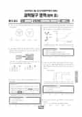

문제지


시험지를 먼저 풀어 보세요. 등급컷·표준점수·난이도는 흐리게 가려 뒀어요.
| 등급 | 원점수 | 표준점수 | 백분위 |
|---|---|---|---|
| 1 | 44 | 76 | 96 |
| 2 | 31 | 63 | 88 |
| 3 | 22 | 54 | 76 |
| 4 | 16 | 49 | 59 |
| 5 | 12 | 45 | 39 |
| 6 | 11 | 44 | 28 |
| 7 | 8 | 41 | 10 |
| 8 | 6 | 39 | 5 |
등급별 컷 · 만점 50점
| 등급 | 표준점수 이상 | 인원(명) | 비율 |
|---|---|---|---|
| 1 | 76 | 138 | 4.27% |
| 2 | 63 | 245 | 7.58% |
| 3 | 54 | 411 | 12.71% |
| 4 | 49 | 575 | 17.79% |
| 5 | 45 | 673 | 20.82% |
| 6 | 44 | 523 | 16.18% |
| 7 | 41 | 366 | 11.32% |
| 8 | 39 | 177 | 5.47% |
| 9 | 33 | 125 | 3.87% |
시·도교육청 공개 자료
출처: 시·도교육청이 공개한 전국연합학력평가 성적 분석·통계자료(공개 자료 보기).
발행 기관: 시·도교육청(전국연합학력평가). 파일 위치: 이 사이트가 보관한 사본. 저작권은 발행 기관에 있습니다. 원본과 다르거나 게시 중단이 필요하면 연락처로 알려 주세요. 등급컷 출처 구분은 데이터 원칙에서 설명합니다.
막대 색은 역대 대비 난이도 · 진한 막대가 이 시험 · 막대를 누르면 그 회차로 이동
| 회차 | 1등급컷 | 표점 최고 | 1등급 표점 | 난이도 |
|---|---|---|---|---|
| 5월 학평2026년 고3이 시험 | 44 | 81 | 76 | 쉬움 |
| 10월 학평2025년 고3 | 48 | 73 | 71 | 매우 쉬움 |
| 7월 학평2025년 고3 | 41 | 84 | 75 | 보통 |
| 10월 학평2024년 고3 | 47 | 77 | 75 | 보통 |
| 7월 학평2024년 고3 | 38 | 88 | 75 | 어려움 |
| 10월 학평2023년 고3 | 41 | 84 | 74 | 쉬움 |
| 7월 학평2023년 고3 | 29 | 100 | 72 | 매우 어려움 |
| 4월 학평2023년 고3 | 43 | 100 | 75 | 보통 |
| 10월 학평2022년 고3 | 50 | 71 | 71 | 매우 쉬움 |
| 7월 학평2022년 고3 | 39 | 85 | 74 | 어려움 |